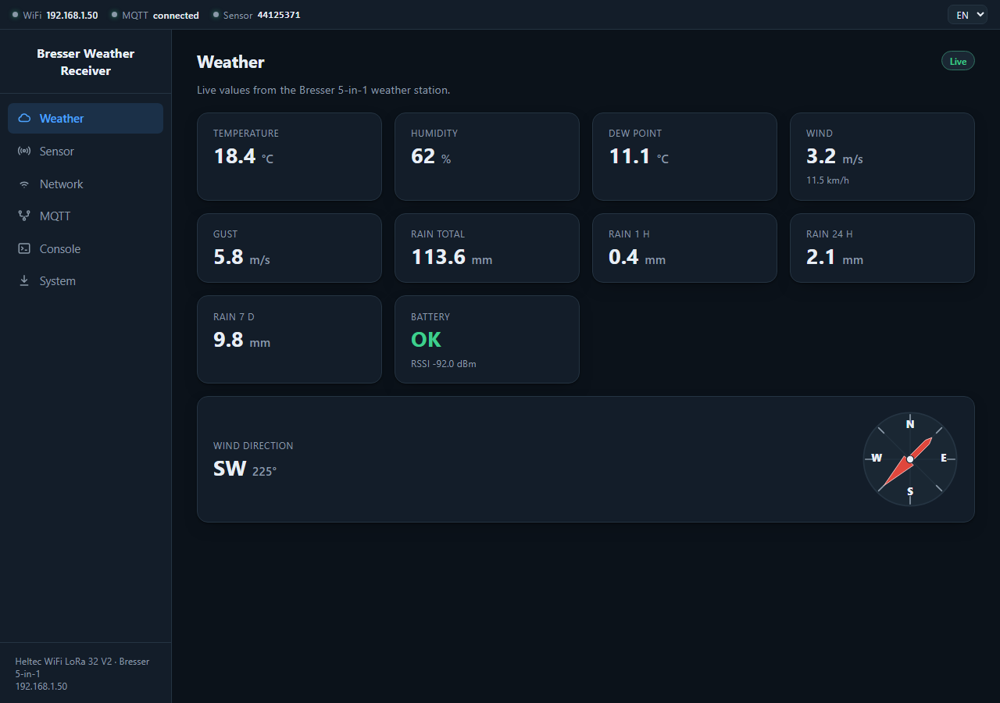
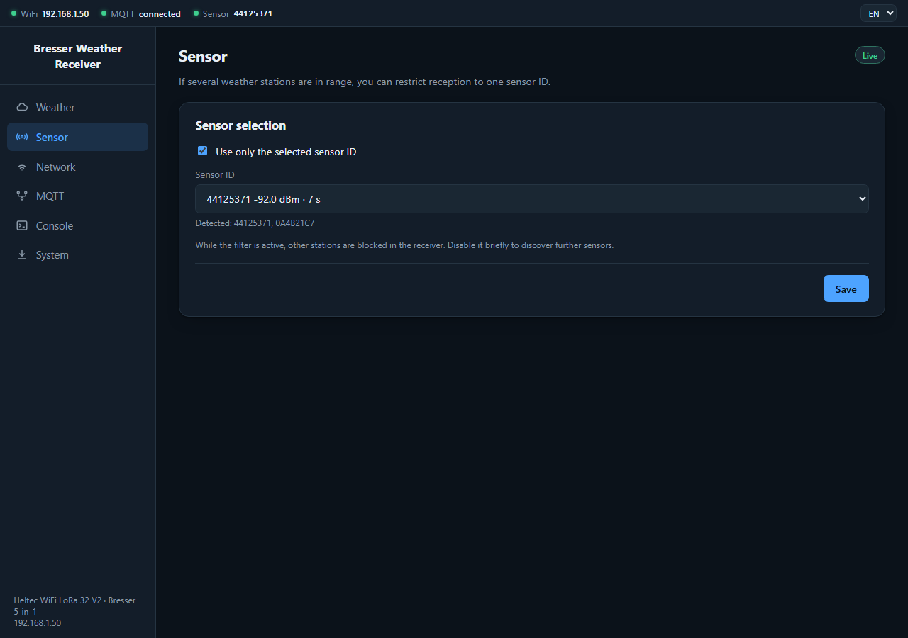
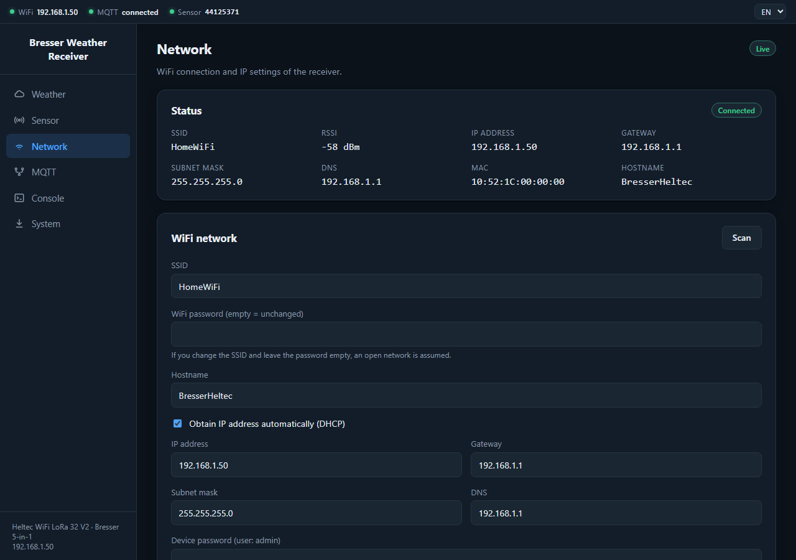
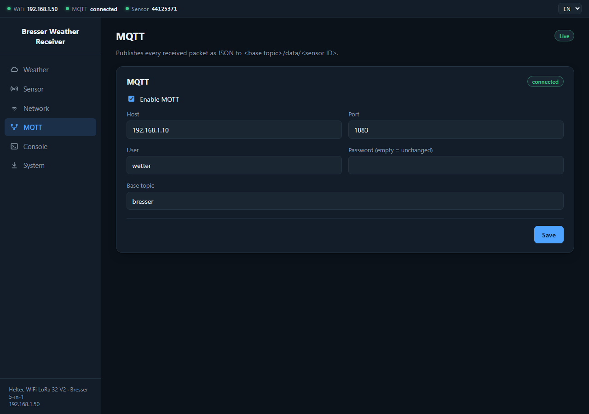
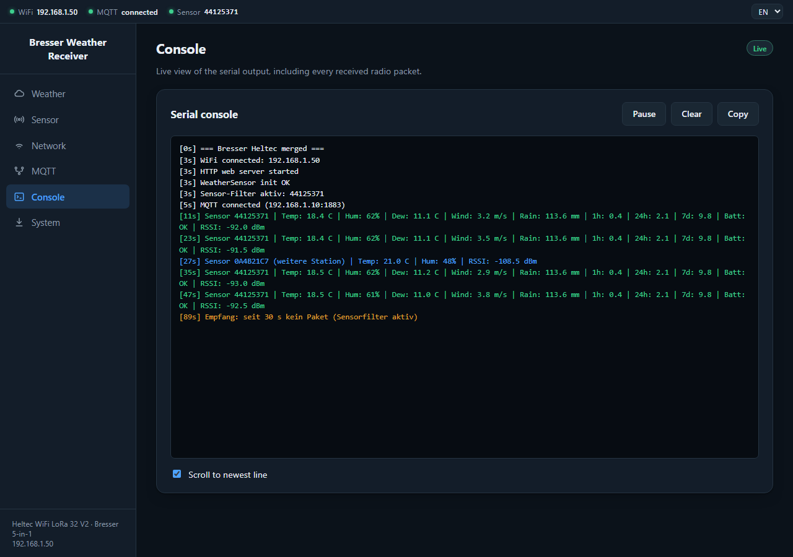
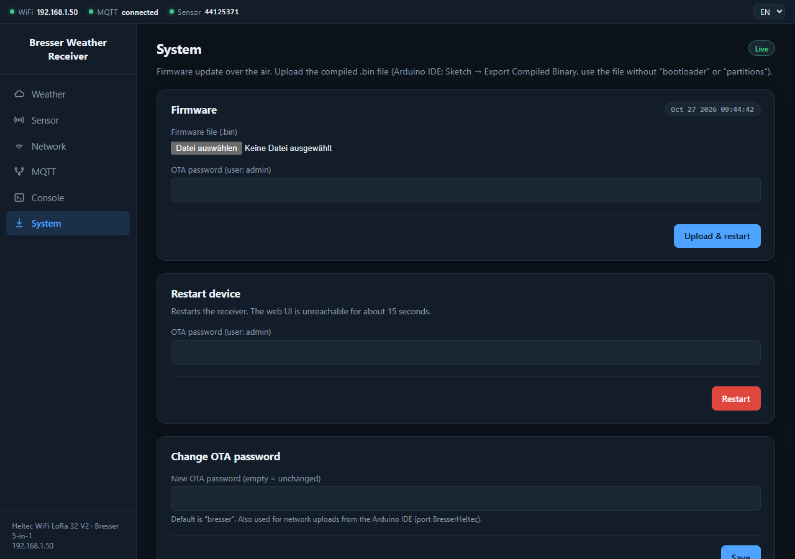

Receive, display and pass on the measurements of a Bresser 5-in-1 weather station with the Heltec WiFi LoRa 32 V2

The screenshots show example data (addresses and names are placeholders) and come from the web interface of firmware 1.0.0.
The receiver is built around a Heltec WiFi LoRa 32 V2. Its radio chip (SX1276) receives the telegrams of the Bresser 5-in-1 weather station on 868 MHz. The firmware decodes them, derives further values (dew point, rain of the last hour, 24 hours and 7 days) and makes the data available in three ways:
The device is a receiver only. It does not transmit anything to the weather station.
For a new or blank board the release contains two files:
| File | Purpose |
|---|---|
Bresser5in1-<version>-erstinstallation.bin | Full flash image (8 MB), written at address 0x0 |
Bresser5in1-<version>.bin | Firmware only, for later updates in the web interface |
espressif.github.io/esptool-js with Chrome or Edge.921600, click Connect and select the device's COM port.0x0 as Flash Address, choose the file …-erstinstallation.bin and click Program.esptool --chip esp32 --port COM5 --baud 921600 write_flash 0x0 Bresser5in1-v1.0.0-erstinstallation.bin
For a completely clean start run esptool --chip esp32 --port COM5 erase_flash beforehand.
Arduino IDE with the ESP32 board package (tested: 3.3.10), board Heltec WiFi LoRa 32(V2) and the libraries
BresserWeatherSensorReceiver, RadioLib, WiFiManager, PubSubClient, ArduinoJson and
ESP8266 and ESP32 OLED driver for SSD1306 displays. Open the sketch Bresser5in1_Merged and upload it.
Note: The full image erases the configuration storage. WiFi credentials, MQTT settings and the
OTA password have to be set up again afterwards. It is built for boards with 8 MB of flash; with only 4 MB please use way C.
The detailed guide is in INSTALLATION.en.md.
http://192.168.4.1.http://<IP address> in the browser, or alternatively http://BresserHeltec.local.The portal stays open for five minutes. If nothing is set up in that time, the device keeps running without WiFi (reception and OLED work). To open the portal again later, hold the PRG button (GPIO0) while powering on. The WiFi can also be changed at any time on the Network page.
The interface is reachable at the IP address of the device and adapts to the screen width (on a phone the menu icon opens the sidebar). It consists of a status bar, a sidebar for navigation and the content area.
The bar at the top shows three indicators: WiFi (connected, with IP address), MQTT (connected, disconnected or disabled) and Sensor (ID of the displayed station). A green dot means fine, yellow a warning, grey inactive. At the top right you switch between EN and DE; the choice is stored in the browser.
The badge at the top right reads Live while fresh data arrives, otherwise the age of the last packet or No data yet. The page refreshes every three seconds. The station sends new values about every twelve seconds.
| Card | Meaning |
|---|---|
| Temperature, Humidity | Values measured by the station |
| Dew point | Calculated from temperature and humidity |
| Wind, Gust | Mean wind speed and gust in m/s; the wind in km/h is shown below |
| Rain total | Continuous counter of the station in mm |
| Rain 1 h / 24 h / 7 d | Calculated by the device from the counter. Starts at 0 after a restart |
| Battery, RSSI | Battery state of the station and signal strength of the last packet in dBm |
| Wind direction | Compass direction, degrees and wind rose |
The total rain counter is protected against radio errors: a jump of more than 5 mm per packet (or a decrease) is only accepted once the next packet confirms the same value. If the station's counter is reset, rain keeps being counted from the reset.

If several Bresser stations are within range, reception can be restricted to one station:
While the filter is active, foreign stations are already blocked in the receiver and no longer show up in the list. Switch the filter off briefly to search for further sensors. The dashboard, OLED and rain values always belong to one station: the saved sensor ID, otherwise the one received first. Other stations are only published over MQTT (without rain time windows).

The top shows the current state: SSID, WiFi RSSI, IP address, gateway, subnet mask, DNS, MAC address and hostname. Below you can change:
Saving requires the device password (user admin, password = OTA password). The device restarts afterwards.
A new WiFi is tested first and only saved on success; with a wrong password the previous network is kept.
After a new network or a static IP the page may no longer be reachable at the old address. The new IP is shown on the OLED.
A static IP must fit the network (address, gateway, subnet mask).

MQTT is optional and off by default. Enter host, port (default 1883), user, password and Base topic (default bresser).
The password is never returned to the browser; an empty field leaves it unchanged. The badge shows the connection state.
Each station is published under <base topic>/data/<sensor ID>, see the chapter "Passing on the measurements".

The console shows the serial output of the device live, without a cable having to be connected. Each line starts with the uptime in seconds. The messages are in German or technical wording and are not translated.
Pause freezes the display, Clear empties it, Copy puts the text on the clipboard. The device buffers the last 6 KB. The console is the most important tool for judging reception when positioning the device.

Firmware update: choose the file Bresser5in1-<version>.bin, enter the OTA password and click Upload & restart.
A progress bar runs in the browser and on the OLED. Afterwards the device restarts by itself and keeps all settings. The badge at the top shows the build timestamp
of the running firmware. If an update is interrupted, the previous firmware stays active.
Alternatively the update can be installed from the Arduino IDE (port BresserHeltec); a firewall may block this route.
Restart device: restarts the receiver (password required). The interface is unreachable for about 15 seconds afterwards.
Change OTA password: the default password is bresser and should be changed right away.
The display compactly shows, for the displayed station: sensor ID, temperature and humidity, dew point, wind, rain total and rain of the last hour and 24 hours. The image is rotated by 180° compared with the display's default orientation. At startup it shows the IP address; during a firmware update it shows the progress.
Other devices, such as a multi-instrument, can query the values directly. The API is read-only, needs no login and sends
Access-Control-Allow-Origin: *. The pattern matches that of the Clinometer: GET /api/<device>/values, flat JSON, unit in the field name, stale flag.
GET http://<IP>/api/weather/values
{ "valid": true, "stale": false, "sensor_id": "44125371", "age_s": 8,
"temperature_c": 12.4, "humidity_pct": 95, "dew_point_c": 11.6,
"wind_speed_ms": 0.0, "wind_gust_ms": 0.0, "wind_dir_deg": 324, "wind_dir_text": "NNW",
"rain_total_mm": 113.6, "rain_1h_mm": 0.0, "rain_24h_mm": 0.0, "rain_7d_mm": 0.0,
"battery_ok": true, "rssi_dbm": -106.5 }
stale is true when no data has been received yet or the last packet is older than 120 seconds.valid: false and stale: true; the numeric fields are then missing.GET /api/status returns firmware build, uptime, free memory, WiFi signal, IP, MQTT status, active sensor ID and last_packet_age_s (−1 = no packet yet).
For every received packet a JSON is published under <base topic>/data/<sensor ID>, for example bresser/data/44125371:
{ "id": 1142051697, "id_hex": "44125371", "temp_c": 12.4, "humidity": 95, "dew_point_c": 11.6,
"wind_speed_ms": 0.0, "wind_gust_ms": 0.0, "wind_dir_deg": 324, "wind_dir_text": "NNW",
"rain_mm": 113.6, "rain_hour_mm": 0.0, "rain_day_mm": 0.0, "rain_week_mm": 0.0,
"battery_ok": true, "rssi": -106.5, "uptime_s": 3600 }
Packets of other stations do not contain the fields rain_hour_mm, rain_day_mm and rain_week_mm.
To listen in: mosquitto_sub -h <broker> -t 'bresser/#' -v.
The signal strength (RSSI) is shown on the Weather page and in every line of the Console. The closer the value is to 0 dBm, the better. In testing, incorrectly decoded packets already appeared at about −105 dBm (for example a constantly changing battery status). That is an experience value, not a manufacturer specification; the better the value, the more reliable the reception.
At the new location the device also needs a usable WiFi signal. The Network page shows the WiFi signal strength. With weak WiFi the web interface may respond slowly or drop out.
| Problem | Solution |
|---|---|
| No weather data | Antenna connected? Closer to the station? On the Sensor page switch the filter off and check in the Console whether any packet arrives. |
| Wrong station is shown | Switch the filter off, wait, choose the right ID, switch the filter on, save. |
| Rain 1 h / 24 h / 7 d show 0 | Normal after a restart: the windows only fill over time. At startup the first confirmed counter value is the baseline. |
| Battery alternates between OK and LOW | Usually decoding errors at a weak signal. Improve reception rather than replacing the battery right away. |
| Web interface not reachable | Read the IP from the OLED or the router, check the network. To set up the WiFi again, hold PRG at startup. |
| Not reachable after a network change | The new IP is shown on the OLED. For a static IP check address, gateway and subnet. In an emergency hold PRG at startup and set up the WiFi again. |
| MQTT connects but no data arrives | Check host, port, user, password and base topic. Look for "MQTT publish failed" in the Console. Check the broker with mosquitto_sub. |
| Update fails | Check the OTA password (error 401 = wrong password). It must be the plain firmware Bresser5in1-<version>.bin, not the full image. |
| Reset everything to factory state | esptool --chip esp32 --port COM5 erase_flash, then write the full image again. |
admin).bresser is publicly known. Please change it right away.| Property | Value |
|---|---|
| Hardware | Heltec WiFi LoRa 32 V2 (ESP32, SX1276, 0.96" OLED) |
| Radio | 868 MHz (Europe), receive only |
| Station | Bresser 5-in-1 (temperature, humidity, wind, gust, wind direction, rain) |
| Packet interval of the station | about 12 seconds |
| Web interface | HTTP, port 80, German/English |
| Firmware update | Over WiFi (two app slots), browser or Arduino IDE |
| Configuration storage | ESP32 Preferences, survives a restart |
| Serial interface | 115200 baud |
| Rain windows | 1 h, 24 h, 7 d (in RAM, empty after a restart) |
| Source code & releases | github.com/okoebernik/Bresser5in1 |